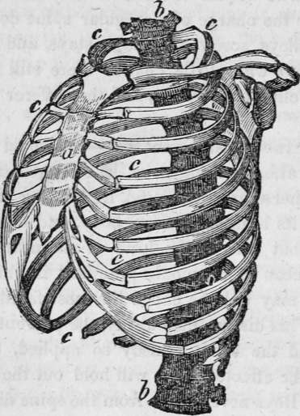
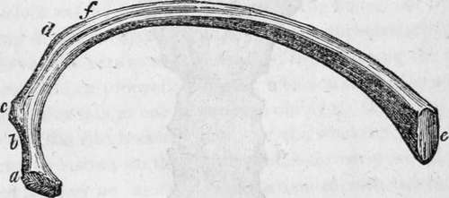
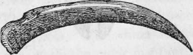

The Human Skeleton. Part 5
Description
This section is from the book "Human Physiology For The Use Of Elementary Schools", by Charles Alfred Lee. Also available from Amazon: Human Physiology, for the Use of Elementary Schools.
The Human Skeleton. Part 5
32. Every one who has paid the least attention to physiology, is aware that a certain degree of exercise is as necessary to the growth and strength of the body, and of every part of it, as nourishment itself; and that if such exercise be withheld during the period of growth, the body never acquires its due form and proportions, and often is permanently crippled. How cruel it is, then, to repress that overflow of life and energy, which nature has given to young creatures, to prompt them to that exertion whieh is necessary to the full development of their physical powers ; and instead of allowing the young of both sexes to jump, and skip, and dance, and play, as nature dictates, to curb all propensity to such vulgar activity, for fear that they may not receive the praise of being well bred. How preposterous, unnatural, and ruinous is the practice of confining delicate females for hours together every day to sedentary employment, the sure consequence of which will be, weakness of the body generally, and of the back in particular, especially if the seat be a stool which has no back, or even a narrow chair with a perpendicular back.
33. The effect of such a practice is, that in consequence of the fatigue induced by such a posture, the spine gives way in some part and bends, and in a little time the curvature becomes permanent. And often when a bend has taken place in one direction, there immediately follows an opposite bend above or below, to keep the eentre of gravity of the body always directly over the base; the curve accordingly thus becomes double, like an italic , and the distortion is rendered complete.
34. The means employed to remedy this affection almost invariably make it worse. In the first place, strong, stiff stays are put on, to support the back, as it is said ; and so they do, perhaps, while they are on ; but as they supersede the action of the muscles, placed there by nature as the supports, they cause these to lose their strength ; and when the stays are withdrawn, the muscles are found too weak to support the body. Other mechanical expedients may now be employed, the back may be forcibly stretched by pullies, or the patient may be kept all day and night lying on an inclined plane. The victim of fashion may next, perhaps, be placed under the charge of a regular spine doctor, who, by means of pulleys, screws, paddings, stays, and close confinement, destroys what little chance there still remains of a cure. A decline now sets in, and the sufferer sinks into an early grave.
35. Dr. Arnott justly remarks,-" it would be accounted madness to attempt to improve the strength and shape of a young race horse or grey hound, by binding tight splints or stays round its beautiful young body, and then tying it up in a stall; but this is the kind of absurdity and cruelty which has been so commonly practised in this country towards what may well be called the most faultless of created beings." This disease may always be prevented by suitable exercise, and the same remedy so applied, as directly to strengthen the affected part, will hold out the best prospect of a cure. Boys never suffer from the spine disease, because steel and whalebone in them are never made to perform the office which God designed for the bones and muscles.
36. The Chest
The thorax, or chest extends above from the first bone of the neck, by which it is connected with the head, to the diaphragm below, by which it is divided from the abdomen. It is composed of bones, muscles, and car tilages, so disposed as to sustain and protect the most vital parts, the heart and lungs, and to turn and twist with perfect facility in every motion of the body, and to be constantly in motion in the act of respiration, without the least cessation during a whole life. In front, the chest is bounded by the sternum, or breast bone ; behind by the spinal column, or back bone, and at the sides by the ribs. Below, the diaphragm forms a membranous partition between it and the cavity of the abdomen. It is conical in shape, with its apex above, where, indeed, it is so contracted, that there is barely room in the aperture to contain the tubes which go to the lungs and stomach, and for the larger blood vessels that go and come from the heart.
Thorax or chest ;a , the sternum ; b, b, the spine; c, c, the ribs, the cartilages being in front.
37. The ribs are 24 in number, twelve on each side, of which the seven upper are united to the sternum by cartilage, and are called true ribs; the cartilages of the other five are united with each other, and are not attached to the sternum ; these are called false ribs; all of them are connected behind to the spinal column. The ribs increase in length as far as the seventh, by which the cavity of the chest is enlarged ; from the seventh, they successively diminish in lengthy thus diminishing the cavity. The direction of the ribs from above downwards is oblique, forming, as it were, a bundle of hoops playing on each other.
38. The curve of the ribs diminishes considerably from the first to the twelfth ; the second, however, is usually more curved than the first. The inferior ribs are very flat; the twelfth is sometimes straight. The external surface of each rib is convex, the internal concave. Each rib on its outer surface near the spine presents an oblique ridge, occasioned by the insertion of a muscle ; and at this point there is a curvature somewhat abrupt, called the angle of the rib.
Fourth rib; a, vertebral extremity, called the head, which is connect, ed with the bodies of the two contiguous dorsal vertebrae. At b, the bone is contracted, forming the neckc, is the tubercle at the back of the rib, which is articulated with the transverse process of the vertebrae ; d, the angle ; e, the sternal extremity ; f, a groove for the intercostal vessels. This will serve for a general description of the ribs.
Twelfth rib, nearly straight.
Continue to:
Tags
humans, anatomy, skeleton, bones, physiology, organs, nerves, brain